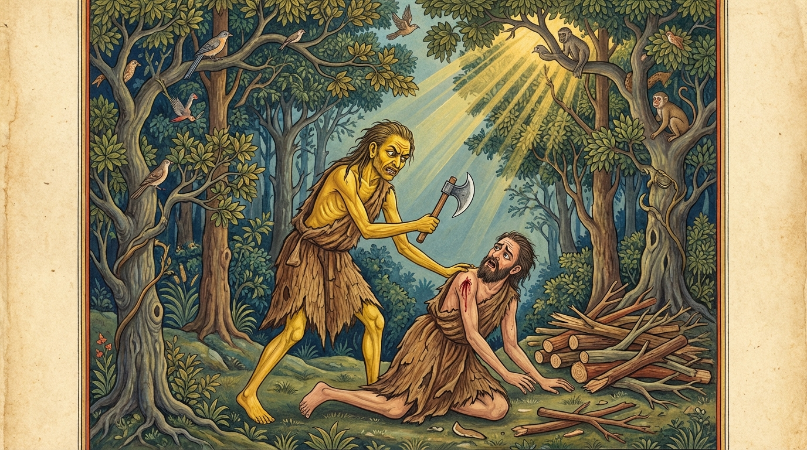

7. තිත්තිර ජාතකය (117)
“අච්චුග්ගතා අතිබලතා” යනුවෙන් ඇරඹෙන මෙම ධර්ම දේශනාව බුදුරජාණන් වහන්සේ ජේතවනාරාමයේ වැඩවාසය කරන සමයෙහි කෝකාලික භික්ෂුව අරබයා වදාළ සේක. එහි කථා පුවත දහතුන් වැනි නිපාතයේ තක්කාරිය ජාතකයේ (ජාතක අංක 481) මතු සඳහන් වන්නේය. බුදුරජාණන් වහන්සේ, “මහණෙනි, කෝකාලික භික්ෂුව තමාගේ වචනය නිසා විනාශයට පත්වුණේ දැන් පමණක් නොව, පෙරත් විනාශ වූයේමය” යි වදාරා අතීත කථාව ගෙනහැර දැක්වූහ.
පෙර බරණැස් නුවර බ්රහ්මදත්ත රජු රාජ්ය කරන සමයෙහි බෝධිසත්වයෝ උසස් බමුණු කුලයක ඉපදී, වැඩිවියට පත්ව, තක්සලාවෙන් සියලු ශිල්ප ඉගෙන, කාම සැප හැර දමා, ඉසි පැවිද්දෙන් පැවිදි වී පඤ්ච අභිඥා සහ අෂ්ට සමාපත්ති උපදවා ගත්හ. හිමාල ප්රදේශයේ සියලු තාපස පිරිස එක්ව එතුමාව අවවාද දෙන ආචාර්යවරයා බවට පත්කරගෙන පිරිවරා ගත්හ. එතුමා පන්සියයක් තාපසවරුන්ට අවවාද දෙන ආචාර්යවරයා වී ධ්යාන සුව විඳිමින් හිමාල වනයේ වාසය කළේය.
එකල එහි පාණ්ඩු රෝගය වැළඳුණු එක් තාපසයෙක් පොරොවක් ගෙන දර පළමින් සිටියේය. එකල්හි එක් දොඩමළු තාපසයෙක් ඔහු සමීපයේ හිඳ, “මෙතැනට පහර දෙන්න, මෙතැනට පහර දෙන්න” යැයි කියමින් ඒ තාපසයාව කෝප ගැන්වීය. ඔහු කිපී, “දැන් නුඹ මගේ දර පළන ශිල්පය උගන්වන ගුරුවරයා නොවේ” යැයි කියා මුවහත් පොරොව ඔසවා එක පහරින්ම ඔහු ජීවිතක්ෂයට පත් කළේය. බෝධිසත්වයෝ ඔහුගේ අවසන් කටයුතු කරවූහ.
එකල ආශ්රමයට නුදුරින් වූ එක් තුඹසක් ළඟ තිත් වටුවෙක් වාසය කළේය. ඌ උදේ සවස තුඹස මත සිට මහත් සේ හඬලෑවේය. එය ඇසූ එක් වැද්දෙක්, “තිත් වටුවකු විය යුතුය” යි සිතා, ශබ්දය ඔස්සේ ගොස් ඌ මරාගෙන ගියේය.

බෝධිසත්වයෝ උගේ ශබ්දය නොඇසෙන විට, “අසවල් තැන තිත් වටුවෙක් වසයි. කුමක් නිසා උගේ හඬ නොඇසෙන්නේද?” යි තාපසයන්ගෙන් විමසූහ. ඔවුහු ඒ කරුණ සැලකළාහුය. හෙතෙම (වටුවා සහ දොඩමළු තාපසයා යන) දෙදෙනාගේම ඒ කාරණා සසඳා ඍෂි පිරිස මැද මේ ගාථාව වදාළේය.
“ඉතා උස් වූ ද, (නැවත නැවත කීමෙන්) ඉතා බලවත් වූ ද, ප්රමාණය ඉක්මවා ප්රකාශ කළා වූ ද වචනය; ප්රමාණය ඉක්මවා හඬලූ තිත් වටුවා මෙන්, නුවණ නැත්තාවූ පුද්ගලයා විනාශ කර දමයි.”
එහි “අච්චුග්ගතා” යනු ඉතා උස්ව ගිය හෙවත් මහත් කොට කියන ලද යන්නයි. “අතිබලතා” යනු නැවත නැවත කීමෙන් ස්වභාවයෙන්ම ඉතා බලවත් වූ යන්නයි. “අතිවෙලං පභාසිතා” යනු වේලාව ඉක්මවා, පමණ ඉක්මවා කියන ලද යන්නයි. “තිත්තිරං වාතිවස්සිත” යනු යම් සේ තිත් වටුවා පමණ ඉක්මවා හඬලීමෙන් විනාශයට පත් වී ද, එසේම එබඳු (වාචාල) වචනය නුවණ නැති බාල පුද්ගලයා විනාශ කරයි.
මෙසේ බෝධිසත්වයෝ තාපස පිරිසට අවවාද දී, සතර බ්රහ්ම විහරණ වඩා, මරණින් මතු බ්රහ්ම ලෝකයේ උපත ලැබූහ.
බුදුරජාණන් වහන්සේ, “මහණෙනි, කෝකාලික භික්ෂුව තමාගේ වචනය නිසා විනාශයට පත්වුණේ දැන් පමණක් නොවේ, පෙරත් විනාශ වූයේමය” යි වදාරා, මෙම ධර්ම දේශනාව ගෙනහැර දක්වා ජාතකය සමාධාන කළ සේක. “එකල අකීකරු දොඩමළු තාපසයා වූයේ මේ කෝකාලික භික්ෂුවයි. තාපස පිරිස වූයේ බුදු පිරිසයි. නායක තාපසයා වනාහි මම ම වෙමි.”
තිත්තිර ජාතක වර්ණනාව - හත්වැනියි.